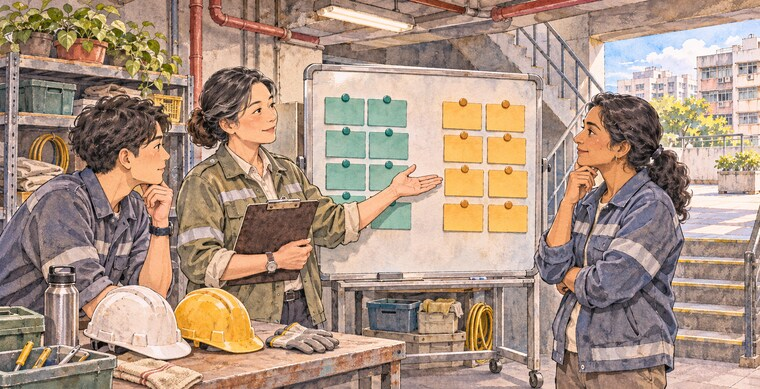

PPL-41 · 香港 · 15分鐘 · 工作設計 · 合資格替更人員 · 程序公平 · 主動提出安全疑慮
同一個警告，兩個工作地點。

全港警告不能取代個別工作地點的評估
香港特區政府在2026年10月答覆立法會時解釋，適用於全港的工作暑熱警告不能取代個別工作地點的評估。僱主必須因應現場情況採取措施；如果警告未能充分反映員工承受暑熱的情況，可尋求職業健康專業支援。答覆亦說明了2026年8月新增的警告發出條件。下文的承辦商是虛構的。
課堂決定
你管理一家虛構的香港樓宇維修承辦商。公司下星期必須完成天台及地面有遮蔽處的工作。一項由具備所需專業能力的人員進行的職業健康評估，已為每項工作訂明管控措施、有薪休息安排，以及須停止工作或重新評估的條件。下列兩個人手方案均不得放寬這些要求。經審視，兩個方案只有在評估所依據的條件仍然成立時才可行。按承辦商的程序，任何人都可停止手上的工作，並通報現場情況有變。指定主管須待具備所需專業能力的人員重新評估後，才可批准復工。
開工前，先選定一個人手方案。方案 A 從有遮蔽處的工作小組調派兩名合資格同事，為天台工作提供替更支援。方案 B 向認可服務供應商聘用一隊合資格臨時替更人員。安排已包括培訓、督導、僱傭保障及議定的薪酬。任何人都不會因按規定休息或通報情況有變而被扣薪。個案沒有提供或要求提交任何僱員健康資料。
附表所有數字均為同一星期的假設規劃估算，已計及規定的管控措施及有薪休息安排。每個工作量單位代表完成一項標準工作，並非一小時可安全承受暑熱的時間。天台工作須具備指定資格，不能以有遮蔽處的工作替代。按正常人手編制，已可完成天台工作28個單位及有遮蔽處的工作44個單位。客戶需要天台工作32個單位及有遮蔽處的工作40個單位。額外人手預算為6,000港元。
| 方案 | 額外成本 | 天台工作量上限 | 有遮蔽處工作量上限 |
|---|
| A：調派合資格同事 | HK$3,200 | 34個單位 | 40個單位 |
| B：由認可供應商提供臨時替更 | HK$5,600 | 38個單位 | 44個單位 |
你的決定你會敲定哪個人手方案，為甚麼？先比較成本和剩餘工作量，再說明你會如何公平分配替更人手，而不把劃一的休息安排當成公平的定義。
第二輪 · 多了一項資料
在敲定人手前，客戶確認，由於進場安排有變，四項在有遮蔽處進行的工作將延至之後某個星期，但四項須由合資格人員執行的天台工作則提前至本星期。現時需要天台工作36個單位及有遮蔽處的工作36個單位。附表的工作量上限及價格維持不變。這只是施工時間表有變，並不表示天台工作變得更安全。
一名主管建議沿用方案 A，請同事縮短評估所訂的休息時間，以補足欠缺的兩個天台工作單位。另一名主管建議採用方案 B。你也可以另行協商新的完工日期；個案沒有提供延期罰款金額。不論採用哪個方案，只要現場情況實際轉差，仍須啟動評估所訂的停工及檢討程序。
你的決定你現在會批准哪個選擇：A、B，還是協商延期？請說明工作量缺口、B 較 A 多出的成本，以及現場情況有變時誰可停止工作。你會怎樣向有遮蔽處的工作小組解釋不同的替更安排？
講評 · 做得完，不代表可以讓員工承受暑熱
起初，兩個方案都能在預算內滿足需求。A 的天台工作尚有兩個單位的餘量，有遮蔽處的工作則沒有餘量；B 的天台工作有六個單位餘量，有遮蔽處的工作有四個。B 貴2,400港元。如果較低成本和較小餘量切合工作需要，選 A 有其道理；如果額外的調配彈性值得這個差價，選 B 也有其道理。附表沒有為患病損失訂出金額，也不能證明任何一個方案能防止員工患病。
講評 · 資格要求限制人手調配
需求改變後，A 即使在有遮蔽處的工作有四個單位餘量，天台工作仍欠兩個單位。把兩類工作量上限相加，會掩蓋技能限制。B 在6,000港元的預算內，天台工作有兩個單位餘量，有遮蔽處的工作有八個。在既定條件下，B 是可按時完工的選擇。選 A 並協商延期也可能合理，但延期的商業後果未有以金額估算。縮短評估所訂的休息時間，並不是可用來填補工作量缺口的辦法。
講評 · 同等尊重，不等於劃一安排
開工前，先解釋按工作項目進行的評估，以及替更人手如何分配。不同的暑熱暴露程度及職務，可能需要不同的管控措施；不應讓在有遮蔽處工作的同事接手多得無法應付的積壓工作。公布合資格替更人員的職責分工，就輪替安排諮詢兩組同事，同時保障個人私隱。員工按規定休息或真誠通報安全疑慮，不得因此少收議定薪酬，也不應被視為工作不夠投入。
講評 · 通報渠道要有實際應對安排
情況有變時，指定主管須依循評估所訂的停工及檢討程序；員工毋須先在預算爭議中說服別人，才可通報。預先指定後備決策人、向上呈報的渠道，以及在有需要時負責安排具備所需專業能力的人員在復工前重新評估的人。記錄原定替更人手是否實際到位、哪些須由合資格人員執行的工作仍無人接替，以及接獲疑慮後多久才作出回應。不要把零通報當成安全證明，也不要在未計及工作條件的情況下直接比較工作產出。
教師說明
預留15分鐘：三分鐘閱讀，四分鐘作第一輪決定，四分鐘處理念需求變動，四分鐘設計主管應對及替更安排。讓學生思考：為甚麼有遮蔽處的四個工作單位餘量，不能補足天台工作欠缺的兩個單位？為甚麼全港警告不能證明某個天台適宜工作？
這是關於人手編配與公平的練習，不是暑熱風險評估、法律意見或醫療程序。實際管控措施及工作與休息安排，須參照現行指引，並由具備所需專業能力的人員評估；本文沒有虛構任何安全溫度或一律適用的休息時長。虛構方案以評估所依據的條件仍然成立為前提；若條件不再成立，便須重新考慮方案。
第二輪
在敲定人手前，客戶確認，由於進場安排有變，四項在有遮蔽處進行的工作將延至之後某個星期，但四項須由合資格人員執行的天台工作則提前至本星期。現時需要天台工作36個單位及有遮蔽處的工作36個單位。附表的工作量上限及價格維持不變。這只是施工時間表有變，並不表示天台工作變得更安全。
一名主管建議沿用方案 A，請同事縮短評估所訂的休息時間，以補足欠缺的兩個天台工作單位。另一名主管建議採用方案 B。你也可以另行協商新的完工日期；個案沒有提供延期罰款金額。不論採用哪個方案，只要現場情況實際轉差，仍須啟動評估所訂的停工及檢討程序。
你的決定你現在會批准哪個選擇：A、B，還是協商延期？請說明工作量缺口、B 較 A 多出的成本，以及現場情況有變時誰可停止工作。你會怎樣向有遮蔽處的工作小組解釋不同的替更安排？